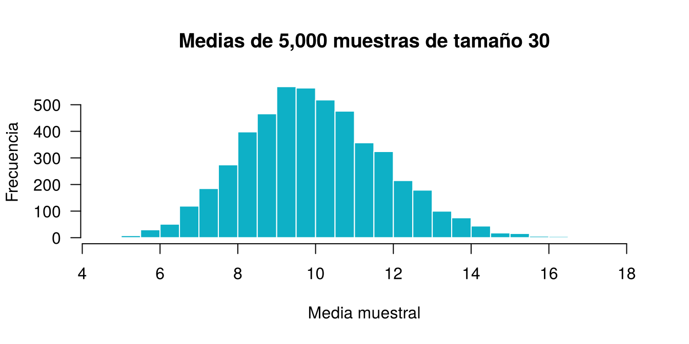

En R, las funciones apply,
lapply y sapply forman parte de la familia de
funciones de aplicación. Permiten aplicar operaciones a
estructuras como listas, vectores, matrices y data frames, sin escribir
bucles como for. Su uso da un código más conciso y
legible.
Con frecuencia se necesita aplicar la misma función a cada fila,
columna o elemento de un objeto. La familia apply lo hace
sin escribir un ciclo: recibe un objeto y una función, y organiza los
resultados. Como las funciones son objetos, se pasan como argumento.
| Función | Sobre qué opera | Qué recorre | Qué devuelve |
|---|---|---|---|
apply() |
matriz, arreglo o data frame | filas o columnas | vector, matriz o lista |
lapply() |
vector, lista o data frame | cada elemento | siempre una lista |
sapply() |
vector, lista o data frame | cada elemento | vector o matriz si es posible; si no, una lista |
vapply() |
vector, lista o data frame | cada elemento | el tipo que se le indique |
tapply() |
vector y uno o varios factores | cada grupo | vector o arreglo |
mapply() |
varios vectores o listas | sus elementos a la par | vector, matriz o lista |
replicate() |
una expresión | n repeticiones | vector, matriz o lista |
Elaborada a partir de la documentación de apply, lapply, tapply y mapply.
Aplica una función por filas o columnas. Su sintaxis es
apply(X, MARGIN, FUN, ...), donde MARGIN = 1
indica filas, MARGIN = 2 columnas y ... son
argumentos adicionales para FUN.
mi_matriz <- matrix(1:9, nrow = 3, byrow = TRUE)
mi_matriz [,1] [,2] [,3]
[1,] 1 2 3
[2,] 4 5 6
[3,] 7 8 9apply(mi_matriz, MARGIN = 1, FUN = sum) # suma por fila[1] 6 15 24apply(mi_matriz, MARGIN = 2, FUN = mean) # media por columna[1] 4 5 6También admite funciones propias. Esta multiplica por 2 el primer valor de cada fila, le suma el promedio y divide entre 4:
df <- data.frame(A = c(2, 4, 6), B = c(8, 10, 12), C = c(1, 3, 5))
mi_funcion <- function(x) {
(2 * x[1] + mean(x)) / 4
}
apply(df, MARGIN = 1, FUN = mi_funcion)[1] 1.916667 3.416667 4.916667Combinada con simulación, permite repetir un cálculo sobre muchas muestras. Cada fila de la matriz es una muestra de tamaño 4 de una distribución uniforme:
generar_muestras <- function(m, n) {
matrix(runif(m * n), nrow = m, ncol = n)
}
operacion_vector <- function(x) {
(x[length(x)] * max(x)) / min(x)
}
set.seed(123)
muestras <- generar_muestras(m = 5, n = 4)
apply(muestras, MARGIN = 1, FUN = operacion_vector)[1] 18.8992251 0.7883051 0.8924190 0.8830174 8.8518827Los argumentos adicionales se escriben después de la función. Si la función devuelve más de un valor por fila, cada resultado queda en una columna, como indica la documentación:
apply(iris[, 1:4], 2, quantile, probs = c(0.25, 0.75)) Sepal.Length Sepal.Width Petal.Length Petal.Width
25% 5.1 2.8 1.6 0.3
75% 6.4 3.3 5.1 1.8apply(mi_matriz, 1, range) # 3 filas originales: 3 columnas [,1] [,2] [,3]
[1,] 1 4 7
[2,] 3 6 9apply() convierte un data frame en matriz con
as.matrix(). Como una matriz admite un solo tipo, si hay
una columna de texto todos los valores pasan a ser texto.
apply(iris[1:2, ], 1, class) 1 2
"character" "character" Para sumas y medias por fila o columna, rowSums(),
colSums(), rowMeans() y
colMeans() son equivalentes y, según su documentación,
mucho más rápidas.
rowSums(mi_matriz)[1] 6 15 24colMeans(mi_matriz)[1] 4 5 6Aplica una función a cada elemento y siempre devuelve una lista. Es útil cuando los resultados tienen longitudes distintas.
mi_lista <- list(grupo1 = c(1, 2, 3), grupo2 = c(4, 5), grupo3 = c(6, 7, 8, 9))
cuadrados_vector <- function(x) {
x^2
}
lapply(mi_lista, cuadrados_vector)$grupo1
[1] 1 4 9
$grupo2
[1] 16 25
$grupo3
[1] 36 49 64 81Como un data frame es una lista de columnas, lapply() lo
recorre por columnas. Con split() se aplica por grupos:
por_especie <- split(iris$Sepal.Length, iris$Species)
lapply(por_especie, summary)$setosa
Min. 1st Qu. Median Mean 3rd Qu. Max.
4.300 4.800 5.000 5.006 5.200 5.800
$versicolor
Min. 1st Qu. Median Mean 3rd Qu. Max.
4.900 5.600 5.900 5.936 6.300 7.000
$virginica
Min. 1st Qu. Median Mean 3rd Qu. Max.
4.900 6.225 6.500 6.588 6.900 7.900 Es una versión
de lapply() que intenta simplificar el resultado:
medidas <- list(grupo1 = c(2, 4, 6), grupo2 = c(5, 7, 9, 11), grupo3 = c(1, 3))
sapply(medidas, mean) # vectorgrupo1 grupo2 grupo3
4 8 2 sapply(medidas, range) # matriz grupo1 grupo2 grupo3
[1,] 2 5 1
[2,] 6 11 3sapply(medidas, function(x) x[x > 3]) # lista$grupo1
[1] 4 6
$grupo2
[1] 5 7 9 11
$grupo3
numeric(0)También admite funciones propias. Esta multiplica el máximo por el número de elementos y lo divide entre la varianza:
indicador <- function(x) {
(max(x) * length(x)) / var(x)
}
sapply(medidas, indicador)grupo1 grupo2 grupo3
4.5 6.6 3.0 El resultado de sapply() depende de los datos, y eso
puede causar errores difíciles de detectar. Con un vector vacío, por
ejemplo, devuelve una lista. vapply() exige indicar el tipo
de resultado, por lo que la documentación la describe como más
segura. Se recomienda dentro de funciones que otras personas vayan a
reutilizar.
sapply(character(0), nchar) # devuelve una lista vacíanamed list()vapply(character(0), nchar, numeric(1)) # devuelve un numérico vacíonamed numeric(0)vapply(iris[, 1:4], mean, numeric(1))Sepal.Length Sepal.Width Petal.Length Petal.Width
5.843333 3.057333 3.758000 1.199333 vapply(iris[, 1:4], range, numeric(1)) # genera error: devuelve 2 valoresError in vapply(iris[, 1:4], range, numeric(1)): values must be length 1,
but FUN(X[[1]]) result is length 2Aplica una función por grupos definidos por uno o varios factores.
tapply(mtcars$mpg, mtcars$cyl, mean) 4 6 8
26.66364 19.74286 15.10000 tapply(mtcars$mpg, list(cilindros = mtcars$cyl, transmision = mtcars$am), mean) transmision
cilindros 0 1
4 22.900 28.07500
6 19.125 20.56667
8 15.050 15.40000Es la versión
de sapply() para varios argumentos: toma el primer
elemento de cada uno, luego el segundo, y así sucesivamente.
mapply(function(nombre, nota) paste(nombre, "obtuvo", nota),
c("Ana", "Luis"), c(4.2, 3.8), USE.NAMES = FALSE)[1] "Ana obtuvo 4.2" "Luis obtuvo 3.8"Repite una expresión n veces. Es un envoltorio
de sapply() pensado para simulación. El siguiente
ejemplo genera 5,000 muestras de tamaño 30 de una distribución
exponencial con media 10 y guarda la media de cada una. Aunque la
población es asimétrica, la distribución de las medias se acerca a una
normal, como se estudiará en la siguiente unidad.
set.seed(123)
medias <- replicate(5000, mean(rexp(30, rate = 0.1)))
mean(medias) # cercano a la media poblacional: 10[1] 9.960501sd(medias) # cercano a 10 / sqrt(30)[1] 1.80995910 / sqrt(30)[1] 1.825742hist(medias, breaks = 40, col = "#0EB0C6", border = "white", las = 1,
main = "Medias de 5,000 muestras de tamaño 30",
xlab = "Media muestral", ylab = "Frecuencia")
Cuando una función se usa una sola vez no necesita nombre. Desde
R 4.1.0, \(x) es una forma
corta de escribir function(x), y el operador
|> encadena instrucciones.
sapply(iris[, 1:4], function(x) sd(x) / mean(x) * 100) # coeficiente de variaciónSepal.Length Sepal.Width Petal.Length Petal.Width
14.17113 14.25642 46.97441 63.55511 sapply(iris[, 1:4], \(x) sd(x) / mean(x) * 100) # forma cortaSepal.Length Sepal.Width Petal.Length Petal.Width
14.17113 14.25642 46.97441 63.55511 iris[, 1:4] |>
sapply(mean) |>
round(2)Sepal.Length Sepal.Width Petal.Length Petal.Width
5.84 3.06 3.76 1.20 Es una creencia común, pero no es una regla. Esta es la conclusión de las fuentes consultadas:
apply() y lapply() no son vectorización
real: por dentro recorren los elementos uno por uno, así que sus tiempos
suelen ser parecidos a los de un for bien escrito. Su
ventaja es que el código queda más corto y claro (ver el capítulo Functionals de
Advanced R).for y apply es en buena parte
una cuestión
de preferencia y claridad. for suele ser más natural
cuando cada paso tiene varias operaciones relacionadas.# Ciclo for con el resultado reservado desde el inicio
resultado <- numeric(4)
for (i in 1:4) {
resultado[i] <- mean(iris[[i]])
}
resultado[1] 5.843333 3.057333 3.758000 1.199333# Mismo cálculo con sapply y con una función vectorizada
unname(sapply(iris[, 1:4], mean))[1] 5.843333 3.057333 3.758000 1.199333unname(colMeans(iris[, 1:4]))[1] 5.843333 3.057333 3.758000 1.199333Un orden de preferencia razonable es el siguiente:
colMeans(), cumsum() o
ifelse().sapply(), vapply() o
lapply() si se aplica una sola función a cada
elemento.for si la tarea tiene varios pasos o cada
iteración depende de la anterior.El paquete purrr ofrece una
alternativa a esta familia. Su función map() trabaja como
lapply(), y variantes como map_dbl()
garantizan el tipo de resultado, como vapply(). Puede ser
útil si se trabaja con el tidyverse, pero no se requiere en
esta unidad.
| Problema | Causa | Solución |
|---|---|---|
dim(X) must have a positive length |
apply() recibió un vector |
Usar sapply(), o una matriz |
apply() no calcula con un data frame |
Alguna columna es de texto y todo se vuelve carácter | Seleccionar solo columnas numéricas |
| Se esperaba un vector y salió una lista | Se usó lapply(), o sapply()
no pudo simplificar |
Usar sapply(), o revisar el largo de los
resultados |
| Se confunden filas y columnas | MARGIN quedó invertido |
MARGIN = 1 filas y MARGIN = 2
columnas |
Con m <- matrix(1:12, nrow = 3), calcule el máximo de
cada fila y la media de cada columna.
m <- matrix(1:12, nrow = 3)
apply(m, MARGIN = 1, FUN = max)[1] 10 11 12apply(m, MARGIN = 2, FUN = mean)[1] 2 5 8 11Calcule la mediana de las cuatro columnas numéricas de
iris con lapply() y con sapply().
¿En qué se diferencian los resultados?
lapply(iris[, 1:4], median)$Sepal.Length
[1] 5.8
$Sepal.Width
[1] 3
$Petal.Length
[1] 4.35
$Petal.Width
[1] 1.3sapply(iris[, 1:4], median)Sepal.Length Sepal.Width Petal.Length Petal.Width
5.80 3.00 4.35 1.30 lapply() devuelve una lista, y sapply() la
simplifica a un vector.
apply().lapply().Última revisión: 5 de noviembre de 2026.